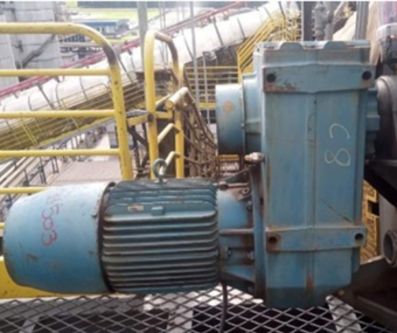

Dados principais
| TAG | RE-631503 |
|---|---|
| Fabricante | WEG CESTARI |
| Tipo do equipamento | MOTOREDUTOR |
| Modelo | WCG20 - V/F10 |
| Potência | MOTOR 25 CV 3F 4 POLOS |
| Relação de redução | 41.4 |
| RPM entrada/saída | 1750 |
| Lubrificante | ISO VG 220 |
| Quantidade de óleo | 32,5 litros |
| Local / Área | Correia Transportadora - CT- 03 |
| Observações | OS Nº 5880 - GOLD |
Acessos rápidos
Link desta página
https://goldredutoresinpasa-web.github.io/DATABOOK-INPASA/equipamentos/RE-631503/